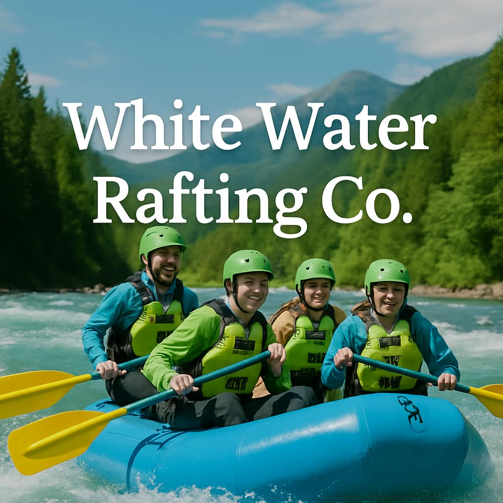
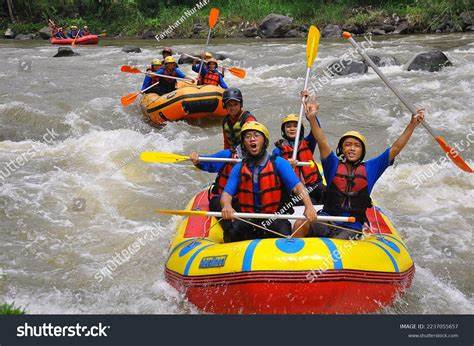

Our mission is to provide thrilling, safe, and unforgettable rafting experiences. We strive to connect people with nature through adventure, while upholding the highest standards of safety and environmental responsibility.


White Water Rafting Co.
History
Founded in 1998, our company has led over 10,000 successful trips, earning a reputation for excellence in outdoor adventure tourism. What started as a small local operation with just a handful of rafts and passionate guides has grown into a trusted name in rafting experiences. Over the years, we have expanded our routes, improved our equipment, and trained a team of certified professionals who share a deep respect for nature and a commitment to guest safety. Our long-standing presence in the industry is a testament to our dedication, consistency, and the unforgettable memories we help create for adventurers from all over the world.